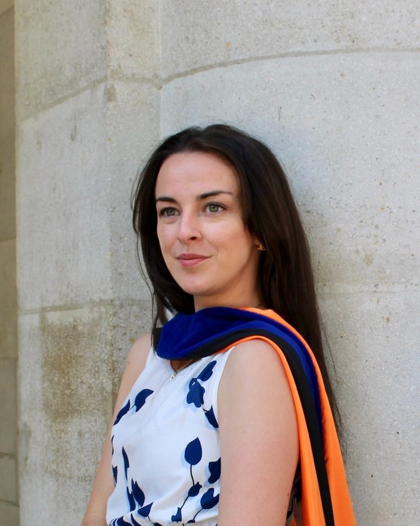

Educational programming for chapter meetings, lunch and learns, and regional conferences. Customized to your members and the events they run, with practical frameworks, resources for their next event, and a new way of seeing the work.
Events have been my work for thirteen years, and the first seven looked a lot like yours: lead conference planner for a continuing education department at a top medical university, building agendas, briefing speakers, and reading post-con surveys for audiences who did not grade on a curve. I started a wedding company along the way (I have never been good at free time), then spent five years teaching event management. Underneath all of it sat the same question: why do some events energize and empower their audience while others seem to fall flat?
That question drove my doctoral research, and the answer became the framework I teach: resonance, the pattern running beneath the events people carry with them. The framework is new; the way I deliver it is not. It's the teaching style I've spent fourteen semesters honing in front of the toughest audience I know, undergraduates at 9 a.m.
Chapter rooms are my favorite place to teach it. The members who give a lunch hour to their own education are already the ones who treat this work as craft, the ones who feel the difference between an event with good logistics and an event with real impact, before there are words for it. This was built for those rooms.

Rayven Crisafulli, PhD, CMP
Founder, Resonance Co.Portrait · Shaina Finkle
"Her storytelling made me feel connected to the subject matter and to her, and working with her while planning the event made me feel more connected to the industry as a whole."
Student evaluation · 2021
"She genuinely cares about the industry and her students."
Student evaluation · 2024
Fourteen semesters · University of Florida · Instructor ratings 4.4–4.96, at or above college means
EngagementConnectionResonanceis designed.
Resonance, in my research, is what happens when event design shows a deep knowledge of the people in the room: guests feel recognized, and they answer back with attention, laughter, sometimes tears (the tears are usually at weddings).
Association education runs on the same exchange, so I design sessions the way I teach planners to design events: from the members out. I want to know who they are, what events they run, and what tools they need to do their job better before I draft a single slide. Each session opens with a story from the field, works one idea through the room in discussion, and closes with a framework members carry into their next event. The discussion is part of the design: members trading problems and recognizing their own Tuesdays in each other's stories is half of what a chapter meeting is for.
The flagship. Introduces Resonance Mapping, the framework behind Resonance Co.'s curriculum (identity, experience architecture, flow state and narrative), and makes the case that resonance is both the material planners design in and a result they can measure. Experienced planners walk out with a repeatable system for what they have been doing on instinct.
Full description →The evidence base. Walks through the research behind resonance and how guests actually experience events: what gets noticed, what gets remembered, and why some moments imprint while others evaporate. For audiences who want the why before the how.
Full description →The contrarian session, argued with evidence. A decade of chasing "elevated" has produced beautiful, interchangeable events nobody remembers. Attendees leave with a framework for separating design that provides spectacle for an audience from design that speaks to one, and practical language for steering clients away from trend-driven briefs.
Full description →Lunch and learn, 45-minute program with discussion, breakout, or Zoom room · Materials two weeks ahead · My own deck and handouts · Standard AV · Ends on time
Talking about crafting events on air, in print, and online.
News4Jax · The Morning Show · Micro weddings · September 2025
Full segment on News4Jax →
Fox 35 Orlando · Micro weddings · September 2025
Full segment on Fox 35 →
NBC 6 South Florida · Micro weddings · October 2025
Full segment on NBC 6 →
Catersource + The Special Event · Orlando · 2023
Session · The Science Behind the Event Experience
“Events give us the opportunity to remove the barriers that keep us separated in our day-to-day lives. You're not thinking about who's a CEO or who makes more money than you. You are here, in the moment, with other people.”
On communitas · from this session
Get in Touch